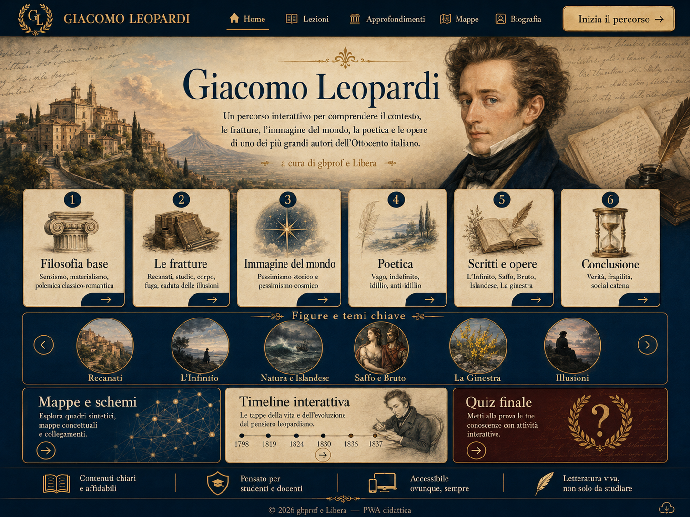

Home Lezioni Approfondimenti Mappe Biografia Inizia il percorso Filosofia base Le fratture Immagine del mondo Poetica Scritti e opere Conclusione Recanati L'Infinito Natura e Islandese Saffo e Bruto La Ginestra Illusioni Mappe e schemi Timeline interattiva Quiz finale